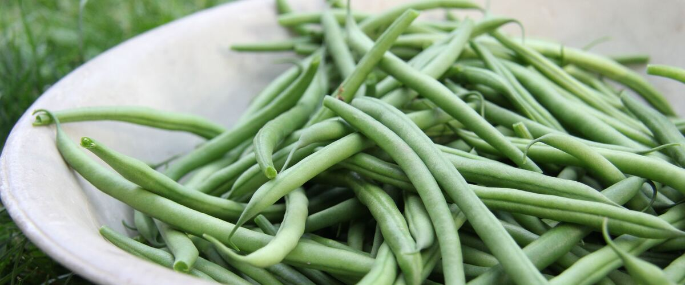

When to plant pole beans in Anacortes, WA
Plant pole beans from seed, directly in the garden in Anacortes, May 10 – Jun 14.
- Difficulty
- Easy
- Sun
- Full sun
- Spacing
- 4 to 6 inches apart along a trellis
- Planting depth
- 1 inch deep
- Frost
- Killed by frost
- First harvest
- About 65 days after planting
Why these dates
Anacortes's typical last spring frost is March 8. Frost kills pole beans, and warm-season crops also need warm soil. Soil here stays cold for weeks after the last frost, so planting waits until about May 10.
West-side valleys. The Willamette Valley, Puget Sound and southern Oregon valleys. Long frost-free seasons, but soil stays cold and wet into May, so warm crops wait for warm soil, not just the last frost.
How to grow pole beans in Anacortes
- Prepare the bed: loosen the soil and mix in an inch or two of compost.
- Plant seeds May 10 – Jun 14, 1 inch deep, 4 to 6 inches apart along a trellis.
- Keep the soil evenly moist until sprouts appear, which can take one to three weeks in cool soil.
- Harvest: Pick when pods are pencil-thick and before the seeds bulge. Picking every few days keeps the vines producing.
Key numbers
- 70–80°F, not below 60°FSoil to sprout
- 6.0–7.0Soil pH
- 6–8 feetTrellis height
- Seed rot in cold soilBiggest risk
Growing notes
What makes the difference in Northwest gardens, in plain language.
Wait for warm soil
Bean seeds soak up water fast as they sprout, and in soil below about 60°F they swell but sit still, which gives rot fungi time to move in. In much of the west side that means waiting until late May or early June. A soil thermometer takes the guessing out of it.
Sow dry seed into moist soil instead of soaking it first, which can crack the seeds. If a spring is cold and wet, it's better to sow a week late than to resow a rotted row.
Trellis and feeding
Pole beans climb 6 to 8 feet, so build a sturdy trellis, teepee or fence before sowing; adding one later tramples seedlings. Beans twine on their own and just need something thin to wrap around, like string or netting.
Beans partner with soil bacteria that fix nitrogen from the air, so they need little fertilizer. Compost at planting is usually enough. Too much nitrogen gives lush vines with few pods. Steady water while flowering matters more, since dry spells make flowers drop.
Pests and problems
Slugs and bean seed flies attack seedlings in cool, damp springs; warm soil helps plants race past both. Aphids sometimes cluster on tips, and a strong spray of water knocks them back. In hot, dry eastern gardens, spider mites can speckle leaves yellow in midsummer, and keeping plants watered helps. White mold can show up in crowded, wet plantings, so give vines room and water at the base. Rotate beans to a new spot each year.
Common questions
When is the last frost in Anacortes, WA?
Typically March 8. In 9 years out of 10, frost is over by March 28. These are 1991–2020 NOAA climate normals for Anacortes.
Is it too late to plant pole beans in Anacortes?
The spring planting window runs through June 14. Later plantings may not have time to produce before the first fall frost, which usually arrives around November 20.
How long until I can harvest pole beans?
About 65 days after planting. Pick when pods are pencil-thick and before the seeds bulge. Picking every few days keeps the vines producing.
Are pole beans better than bush beans?
Pole beans produce over a longer season, often for many weeks, and take up less ground since they grow up. Bush beans produce sooner and need no trellis, but give most of their crop in a couple of weeks. Many gardeners grow both.
Why are my bean flowers falling off?
Usually stress: hot spells above about 90°F, dry soil, or very cool nights. Keep the soil evenly moist and the plants will set pods again when the weather settles.
Why are my pole beans tough and stringy?
They were picked too late. Once the seeds inside bulge, the pods turn fibrous. Pick every few days while pods are pencil-thick; Blue Lake FM-1K and Fortex stay tender longer than many.
Also plant in Anacortes around the same time
Planting dates for pole beans in nearby areas
- Bellingham, WA May 10 – Jun 14
- Mount Vernon and Burlington, WA May 10 – Jun 14
- Oak Harbor and Whidbey Island, WA May 10 – Jun 14
- Friday Harbor and the San Juans, WA May 10 – Jun 14
- Portland, OR May 10 – Jun 14
- Gresham, OR May 10 – Jun 14
Full planting calendar for Anacortes · Pole beans in every city